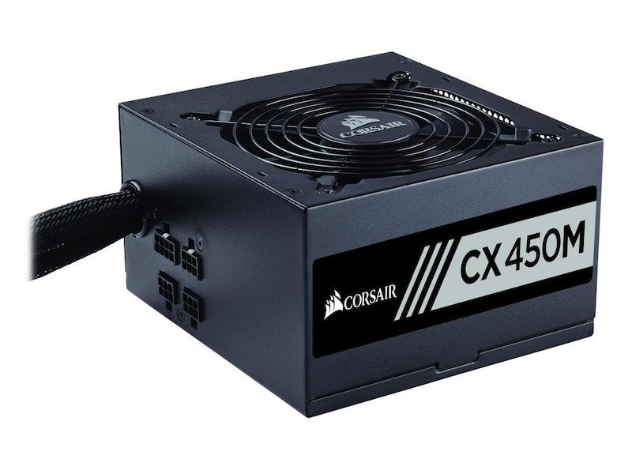

|  | A power supply unit (PSU) converts mains AC to low-voltage regulated DC power for the internal components of a computer. Modern personal computers universally use switched-mode power supplies. Some power supplies have a manual switch for selecting input voltage, while others automatically adapt to the mains voltage. |
Most modern desktop personal computer power supplies conform to the ATX specification, which includes form factor and voltage tolerances. While an ATX power supply is connected to the mains supply, it always provides a 5-volt standby (5VSB) power so that the standby functions on the computer and certain peripherals are powered. ATX power supplies are turned on and off by a signal from the motherboard. They also provide a signal to the motherboard to indicate when the DC voltages are in spec, so that the computer is able to safely power up and boot. The most recent ATX PSU standard is version 3.0 as of mid-2022. |
|